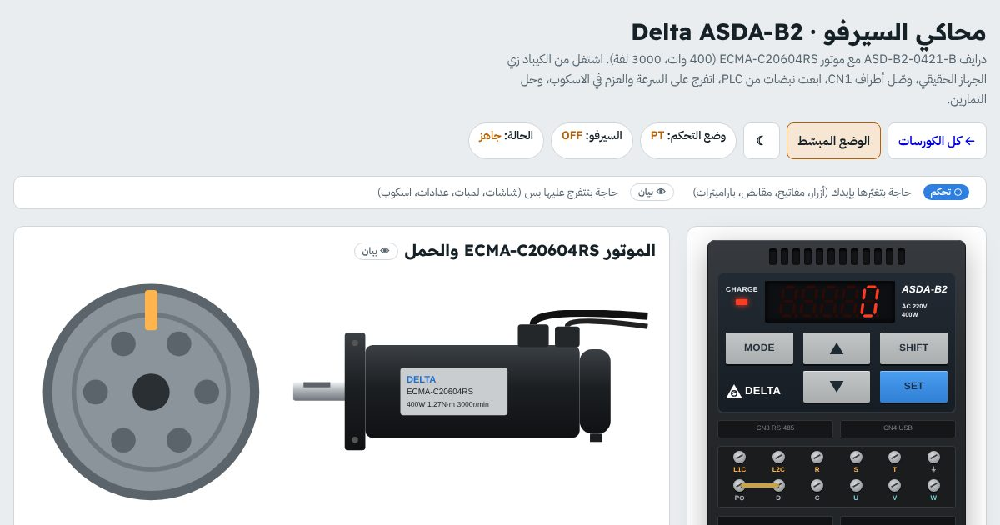

كورس · 4 محاكيات سيرفوبالعربية
كورس السيرفو
شغّل السيرفو من الكيباد ومن PLC، واضبط الجير والجين، وحل الإنذارات على ماكينات تتحرك أمامك.
أول درسين في كورس الشرح مفتوحان للجميع، ومحاكيات السيرفو تُفتح مع الكورس

الخطوة 1
ابدأ بالشرح: كورس السيرفو موتور والدرايف
12 درسًا تفاعليًا تفهم بها السيرفو قبل أن تمسك الكيباد. وبعدها الخطوة 2: المحاكيات.
- ما هو السيرفو؟مفتوح للكل
- مِمّ يتكوّن السيرفو؟
- ما الفرق بين الحلقة المفتوحة والمغلقة؟
- محاكيجرّب: ستيبر أمام سيرفو
- سيرفو أم ستيبر أم انفرتر؟
- تمريناختر المحرك المناسب
- أسئلةأسئلة الدرس
- السيرفو موتور من الداخل
- ما نوع السيرفو موتور؟
- شاهد المحرك من الداخل
- تمرينقطاع في سيرفو موتور
- ما وظيفة فرامل المحرك؟
- كيف تقرأ لوحة بيانات السيرفو موتور؟
- تمريناقرأ لوحة البيانات
- أسئلةأسئلة الدرس
- الإنكودر: عين السيرفو
- لماذا الإنكودر أهم جزء في السيرفو؟
- إنكريمنتال أم أبسليوت؟
- محاكيجرّب: اقطع الكهرباء
- الريزولوشن: كم عدّة في اللفة؟
- تمريناحسب الريزولوشن
- أسئلةأسئلة الدرس
- الدرايف من الداخل
- كيف تبدو دائرة القوى في الدرايف؟
- كيف يتحكم الدرايف في المحرك؟
- تمرينالدرايف من الداخل (اضغط على البلوكات)
- رتّب مسار الإشارة
- تمرينمن الأمر إلى المحرك والعودة
- أسئلةأسئلة الدرس
- توصيل السيرفو
- من أين تدخل القوى إلى الدرايف؟
- كيف يُوصَّل المحرك؟
- الإنكودر والفرامل ومقاومة الفرملة
- أطراف التحكم: CN1 وSTO
- محاكيوصّل الدرايف بيدك
- أسئلةأسئلة الدرس
- أوضاع التشغيل
- كم وضعًا يعمل به السيرفو؟
- جرّب الأوضاع الأربعة
- محاكيمحاكي الأوضاع
- بأي شكل تأتي النبضات؟
- تمريناقرأ النبضات
- أسئلةأسئلة الدرس
- الجير الإلكتروني
- لماذا نحتاج إلى جير إلكتروني؟
- كيف تحسبه؟
- جرّب الحاسبة
- تمرينحاسبة الجير الإلكتروني
- تمارين حساب سريعة
- تمريناحسب
- أسئلةأسئلة الدرس
- التيونينج وضبط الجين
- ما معنى التيونينج؟
- كل عَرَض ومعناه
- جرّب: Auto-tune ثم الضبط اليدوي
- تمرينضبط الجين على حمل حقيقي
- أسئلةأسئلة الدرس
- الهومينج والحدود
- الهومينج: كيف يعرف المحور الصفر؟
- ما الذي يمنع المحور من الاصطدام بالنهاية؟
- تمرينمحور بول سكرو بحساسات
- أسئلةأسئلة الدرس
- التحكم من الـ PLC
- بأي طريقة يتواصل الـ PLC مع الدرايف؟
- النبضات: السرعة والتردد
- محاكيمحاكي: PLC يرسل نبضات
- الشبكات الصناعية
- تمريناختر طريقة التحكم
- أسئلةأسئلة الدرس
- الأعطال الشائعة
- أين يخبرك الإنذار أن تبحث؟
- تجربة: Overvoltage عند الإيقاف
- تمرينالـ DC bus أثناء الفرملة
- لعبة الأعطال
- تمرينحالات من المصانع
- أسئلةأسئلة الدرس
- التشغيل لأول مرة + الامتحان
- تشغيل سيرفو جديد لأول مرة
- تمرينرتّب خطوات التشغيل
- الخطوة التالية: المحاكيات
- امتحانالامتحان النهائي
الكورس بالأرقام
4محاكيات سيرفو من 4 ماركات
6تمارين محلولة خطوة بخطوة
4خطوات في كل تمرين: توصيل وباراميترات وتشغيل وعطل
100باراميتر تقريبًا في محاكي Delta
السيرفو
ماذا ستتعلم؟
- توصيل الدرايف والمحرك والإنكودر وأطراف CN1
- اختبار المحرك بـ JOG من الكيباد قبل أي PLC
- تشغيل وضع السرعة بأمر 0–10V والسرعات الداخلية
- إرسال نبضات Pulse + Direction من PLC وحساب الجير الإلكتروني
- استخدام وضع PR للمواضع الجاهزة ووضع العزم T
- ضبط الجين مع حمل ثقيل ومراقبة شكل الحركة
- تأمين محور رأسي بحساسات النهاية والطوارئ والفرامل
- فهم الإنذارات وحلها كما في الواقع
المحتوى
الخطوة 2: التمارين المحلولة
كل تمرين 4 خطوات: التوصيل، والباراميترات، والتشغيل، وجرّب عطلًا. هذه تمارين محاكي Delta ASDA-B2.
- اختبار JOG من الكيبادتتأكد من سلامة المحرك والإنكودر قبل توصيل الـ PLC
- وضع السرعة S بأمر 0-10V على V-REFسرعة من إشارة أنالوج والسيرفو يمسك بـ SON
- وضع النبضات PT: Pulse + Direction من PLCالجير الإلكتروني: كم نبضة = لفة
- وضع PR: مواضع جاهزة تُختار بالمداخلمواضع مكتوبة في الدرايف تُنفَّذ بإشارة
- وضع العزم T: شد ثابت بأمر T-REF وحد سرعةعزم ثابت على سير مع حد للسرعة
- محور رأسي: حساسات النهاية والطوارئ والفراملكيف لا يسقط الحمل عندما يفصل السيرفو
المحاكيات في هذا الكورس
افتح أي محاكي من هنا أو من داخل الكورس.
لمن؟
لمن هذا الكورس؟
- لفنيي ومهندسي الصيانة في خطوط الإنتاج والتغليف
- لمبرمجي الـ PLC الذين يحتاجون إلى فهم الدرايف من الداخل
- لطلاب الميكاترونيكس والتحكم
- بعد إنهاء الانفرترات
أسئلة متكررة
قبل أن تسأل
هل أحتاج إلى معرفة الانفرتر أولًا؟
ليس شرطًا، لكنه يسهّل عليك كثيرًا. فكرة الباراميترات والأطراف والأعطال متقاربة.
ما الماركات الموجودة؟
Delta ASDA-B2 وMitsubishi MR-JE وYaskawa Sigma-7 وAllen-Bradley Kinetix 300، كلٌّ بكيباده وشاشته.
هل أحتاج إلى حساب؟
نعم، محاكيات السيرفو ضمن الكورس وتحتاج إلى حساب تُنشئه في ثوانٍ ببريدك، ويُحفظ فيه تقدّمك.
هل الباراميترات مطابقة للمانيوال؟
الأرقام مكتوبة للتدريب وقد تختلف عن إصدار جهازك. قبل أي إعداد على ماكينة حقيقية راجعه في مانيوال الشركة.
هل يعمل على الموبايل؟
نعم، والخطوات الموجّهة مصممة لتعمل على الموبايل.
جاهز لتبدأ السيرفو؟
أول درسين مفتوحان للجميع، والكورس كله بمحاكياته يُفتح عند شرائه. ادخل الآن وتابع في الوقت المناسب لك، ويُحفظ تقدّمك.